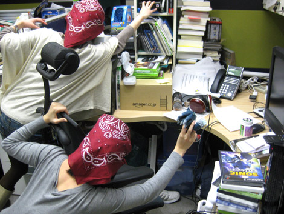
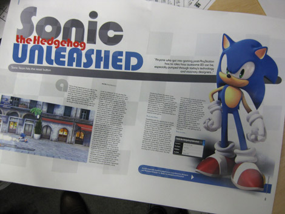
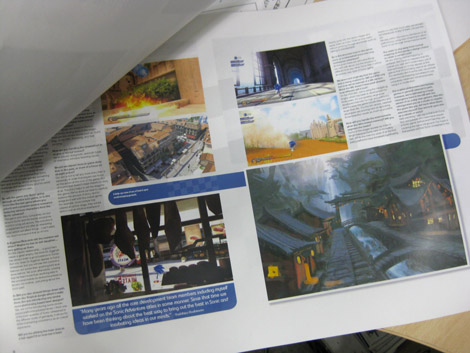
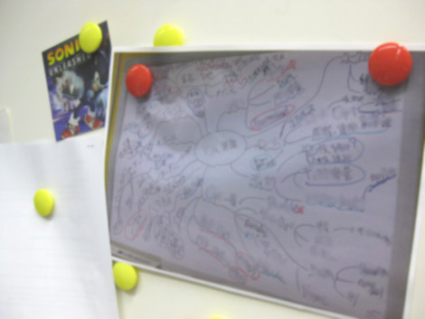
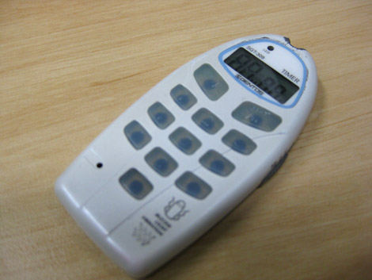

『橋本ディレクターのお席を紹介！(後編)』
2009年02月02日
こんにちは、マツバラです！
ほっかむりで失礼します！
こんにちは、ヨシノです。
前回に引き続き、
『SWA』ディレクター・橋本さんのお席の様子をお伝え致します。
今回は『SWA』に関係のあるものを
探すんだったよね！
なんだか、楽しくなってきた。
よぉ～し……
どんどんいってみよー！

ノリノリで席を漁る2人
むっ。
この、書類の海に埋もれている紙束は。
何か、みつけた？
『SWA』の雑誌記事みたい……
でも、英語だ。

あっ！
『SWA』がアメリカの雑誌で紹介されたときの記事じゃない？
そうか、橋本ディレクターのチェック用の原稿かあ。

わあ、結構、ページ数あるね。
それだけ、
ソニックきゅんが注目されてるってことよ♪
あと、他に何か無いかな……
……ねえヨシノ。
さっきから気になってたんだけど、
そこに貼ってあるの、なんだろうね？
む？
……あ。これは、マインドマップだ。

えーっと……
関連キーワードをどんどん繋げていって
アイデアや情報を管理するアレのことだよね？
プログラム関係の、
いろんな課題が書いてある。
橋本さん、こういうの書きながら
『SWA』のミーティングしたり
情報を整理したりしてたんだね！
コレが『SWA』を作っていったんだって考えると
感慨深いね。
……と、あれ？
コレ、なんだろう。

デジタル式のストップウォッチだね。
でも、ボタンのところの数字が
かすれて消えちゃってる。
あっ、それは！！
知ってるの？
『SWA』開発修羅場中、
橋本さんが猛烈に忙しかったとき、
それ使ってたんだよ！
え？ どうやって？
これで打ち合わせの時間とか
作業時間をはかってたの。
そうして、１分１秒を惜しんで働いてた！
……！
使いこみすぎて
ボタンの数字が消えちゃってるってこと？
壮絶……
半端ないね、
ゲームディレクターって！
……ふぅ。こんなものかな。
そうだね！
橋本さんがお席に戻らないうちに退散しよう！
それでは、皆さま。
今回はそろそろ、失礼します。
私たちが橋本さんに見つかって
おしおきされてなければ
また次回、お会いしましょー。
ちょっと、ヨシノ！！
怖いこと言わないでよ！！
日時: 2009年02月02日 15:00 | パーマリンク


 ソニックを愛する、元気な『SWA』2年目プランナー。
ソニックを愛する、元気な『SWA』2年目プランナー。 マイペースな『SWA』2年目プランナー。
マイペースな『SWA』2年目プランナー。
 ご意見・ご要望はこちら
ご意見・ご要望はこちら RSS
RSS